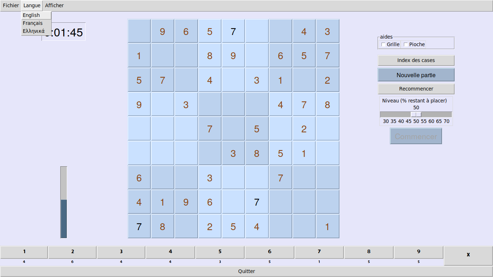

Diplôme Inter-Universitaire
Projet Sudoku
Table des matières
1 Introduction
Nous avons réalisé trois versions du jeu de Sudoku. La première utilise une pile et remplit la grille au fur et à mesure en s'assurant que les symboles déjà placés autorisent le placement. La seconde utilise les méthodes de résolution classiques comme singleton nu, singleton caché, élimination indirecte, XWING, SWORD-fish, etc. Enfin, la troisième version est une version web qui permet de jouer et de vérifier la grille en utilisant Javascript.
2 Première version
2.1 L'interface homme-machine
2.1.1 Au démarrage
Au démarrage (figure 1) la grille de Sudoku apparaît vide au centre de la fenêtre. Sur la gauche, la jauge de remplissage est vide. La pioche, au bas de la fenêtre, indique que neuf symboles de chaque sorte restent à placer sur la grille.
Sur la droite, un bouton Nouvelle partie de couleur distinctive permet d'amorcer une nouvelle partie.

Figure 1 : au démarrage
2.1.2 Nouvelle partie
La grille est tirée de façon aléatoire et secrète. La pioche, au bas de la fenêtre (figure 2) est vide: elle indique que tous les symboles ont été placés sur la grille. Sur la gauche, la jauge de remplissage est pleine. Sur la droite, un curseur est apparu, il permet de choisir le niveau de difficulté. Un bouton Commencer de couleur distinctive permet au joueur de commencer la partie.

Figure 2 : choix du niveau
2.1.3 Début de partie
La grille pleine est vidée aléatoirement jusqu'à atteindre le niveau souhaité par le joueur. La jauge de remplissage et la pioche se retrouvent partiellement remplies. La grille est révélée au joueur et les cases dors et déjà remplies sont gelées : le joueur ne peut plus ni les effacer ni les modifier. Sur la gauche, le chronomètre est mis en marche et décompte le temps qui s'écoule.
Figure 3 : début de partie
2.1.4 Placer un symbole sur la grille
Pour placer un symbole sur la grille, le joueur commence par sélectionner le symbole qu'il souhaite placer soit en le choisissant sur la grille, soit en le choisissant dans la pioche. Le symbole sélectionné apparaît alors d'une couleur distinctive (figure 4).

Figure 4 : sélectionner un symbole
Le joueur clique alors sur une case vide pour y placer le symbole. Si la case est susceptible d'accepter le symbole celui est placé (figure 5). La pioche et la jauge de remplissage évoluent en conséquence.

Figure 5 : placer un symbole
2.1.5 Effacer un symbole de la grille
Pour effacer un symbole, le joueur sélectionne le bouton d'effacement X à droite de la pioche. Ce bouton apparaît alors en rouge (figure 6). Ce bouton agit en bascule: si le joueur clique dessus une nouvelle fois, on sort du mode effacement. On peut aussi en sortir en sélectionnant un autre symbole.
Quand le mode effacement est actif, à chaque fois que le joueur clique sur une case pleine de la grille, celle-ci est effacée. La pioche et la jauge de remplissage évoluent en conséquence.

Figure 6 : effacer un symbole
2.1.6 Menus
En haut de la fenêtre se trouve la barre de menu qui comporte:
- le menu fichier (figure 7) qui permet notamment d'ouvrir un fichier (figure 8). Le format sdk n'est pas encore implémenté, il faut donc utiliser le format csv.

Figure 7 : menu fichier

Figure 8 : ouvrir un fichier
- le menu langue (figure 9) permet de choisir la langue de l'interface parmi français, anglais (figure 10) et grec.

Figure 9 : choix de la langue

Figure 10 : interface en anglais
- le menu afficher (figure 11) qui permet d'afficher les outils développeur (figure 12), le chronomètre et une fenêtre À propos.

Figure 11 : menu afficher

Figure 12 : les outils sont affichés au dessus du chronomètre
Si le joueur renonce à remplir la grille, il peut recourir au solveur. S'il a déjà placé des symboles sur la grille, il doit cliquer sur Recommencer puis sur Solveur.

Figure 13 : victoire
2.1.7 Aides
Le joueur peut activer des aides en cochant les cases aides qui sont situées en haut, à droite de la grille.
- l'aide
Grillepermet d'afficher (en haut à droite) les prétendants au survol des cases (figure 14). Au départ, toutes les cases admettent les neuf symboles comme prétendants. Puis, au fur et à mesure du remplissage, les symboles présents dans les cases cousines de la même ligne, colonne ou bloc 3x3 sont déduites de la liste des prétendants.
Figure 14 : prétendants
- l'aide
Piochepermet d'indiquer (figure 15 à gauche du X) les destinations envisageables pour les symboles de la pioche si l'on survole le cardinal de la pioche quand un symbole est sélectionné. Le bouton Index cases permet de révéler de façon transitoire les index des cases tant que le bouton de la souris est maintenu enfoncé.
Figure 15 : destinations
2.2 Le code
2.2.1 Documentation
Le code est documenté par docstring python. Cela procure une documentation accessible depuis la console.
Par exemple, la classe Case (extrait de programme 1) à une documentation intégrée accessible en tapant help(Case) dans la console python.
30: class Case(Button): 31: """ 32: Classe représentant une case de la grille de Sudoku. 33: 34: Héritage : Une case se configure comme une bouton. 35: mais possède des attributs et des méthodes supplémentaires. 36: 37: attributs: 38: --------- 39: index : Chaque case a un index compris entre 0 et 80 qui indique 40: sa position dans la grille. 41: 42: contenu : Une case non vide a un `contenu`, le symbole qui est affiché 43: quand on tape le nom de la case dans l'interpréteur. 44: 45: pretendants : Une case vide à des prétendants (symboles qu'il est possible 46: de mettre cette case). 47: 48: index_cousines : Une case a des cases cousines qui sont soit dans la même 49: ligne, soit dans la même colonne soit dans le même carré (3 x 3). Une case 50: conserve les index de ses cousines. 51: 52: exemple : 53: ------- 54: >>> root = Tk() 55: >>> index_cousines = list() 56: >>> ma_case = Case(root, 0, index_cousines, text="une case") 57: >>> ma_case.pack() 58: >>> ma_case.pretendants 59: ['1', '2', '3', '4', '5', '6', '7', '8', '9'] 60: >>> ma_case 61: 0 62: """
Il en va de même pour toutes les classes utilisées dans le programme:
- la classe
Case - la classe
Grillequi utilise la classeCase(extrait de programme 2) tout en disposant d'attributs et de méthodes propres (extrait de programme 3). - la classe
Watchdogutilisée lors du tirage - la classe
Sac. Un sac contient des symboles identiques. - la classe
Pioche. Classe utilisant 9 sacs contenant chacun des symboles identiques tous différents (1 sac avec que des "1", un autre avec que des "2", etc.)
208: # Disposition du conteneur cadre qui contient la grille de sudoku 209: for row in range(self.LARGEUR_GRILLE): 210: cadre.rowconfigure(row, weight=1) 211: for column in range(self.LARGEUR_GRILLE): 212: cadre.columnconfigure(column, weight=1) 213: # Affichage de la grille de sudoku 214: index = 0 215: for j in range(self.LARGEUR_GRILLE): 216: for i in range(self.LARGEUR_GRILLE): 217: Case(cadre, 218: index, 219: self.get_index_cousines(index), 220: name='{}'.format(index), 221: font=self.police_case, 222: text=' ', # cases vides à l'initialisation 223: disabledforeground='saddle brown', 224: # background pour linux et windows 225: background=self.get_couleur_case( 226: index, ' '), 227: # highlightbackground pour mac osx 228: highlightbackground=self.get_couleur_case( 229: index, ' ')).grid(row=j, 230: column=i, 231: sticky="nsew") 232: index += 1
123: méthodes: 124: --------- 125: - cacher_jauge_parcours_combinaisons 126: - monter_jauge_parcours_combinaisons 127: - get_couleur_case 128: - get_case 129: - get_index_cousines 130: - get_index_cousines_en_bloc 131: - get_index_cousines_en_colonne 132: - get_index_cousines_en_ligne 133: - __getitem__ 134: - __setitem__ 135: - __len__ 136: - __repr__ 137: - basculer_le_bouton_effacerX 138: - activer_le_symbole 139: - rafraichir_affichage 140: - afficher_les_index 141: - effacer_grille 142: - effacer_case 143: - diminuer_jauge_de_remplissage 144: - restaurer_pretendants 145: - remplir_case 146: - augmenter_jauge_de_remplissage 147: - reduire_pretendants_des_cousines_de_la_case 148: - get_colonne 149: - get_ligne 150: - get_bloc 151: - solveur 152: - remplissage 153: - placer_pioche_sur_grille 154: - placement_est_possible 155: - combinaison_existe 156: - purger 157: - grille_export 158: - grille_export_csv 159: - grille_import 160: - recalculer_les_destinations_envisageables 161: - congeler 162: - file_load 163: - file_save
Il en va de même pour toutes les fonctions utilisées dans le programme: elles sont, elles aussi, documentées par docstring.
2.2.2 Multiplateforme
Python et tkinter sont théoriquement multiplateformes mais l'apparence est différente suivant la plateforme utilisée.
Globalement tkinter fonctionne mieux sous Linux que sous Windows (on perd le changement d'aspect du bouton au survol de la souris) ou sous mac OSX (idem, de plus le background des boutons doit être obtenu de façon détournée et les fenêtre Toplevel sont mal gérées).
2.3 La démarche
2.3.1 Réflexion initiale
- Ne pas consulter de documentation sur les méthodes de résolution pour essayer d'établir une méthode personnelle.
- Chaque case vide à des prétendants (symboles que l'ont peut envisager de placer dans la case). La liste des prétendants se réduit au fur et à mesure que la grille se remplit car il faut retirer les symboles placés dans les cases cousines (cases de même ligne, colonne ou bloc). Je me propose donc de gérer les prétendants pour chacune des cases de la grille (d'où le menu d'aide
Grillequi fait apparaître les prétendants). - Les symboles sont prélevés dans une pioche qui comporte 9 sacs contenant chacun des symboles identiques. Au départ, il y a 81 destinations possibles pour le premier symbole à placer. Le nombre de destinations possibles pour le second symbole à placer n'est pas forcément de 80 car, si le second symbole est le même que le premier, il ne peut pas être placé dans une case cousine du premier. Je me propose donc de gérer les destinations pour chacun des neuf symboles au cours de la partie (d'où le menu d'aide
Piochequi fait apparaître les destinations).
2.3.2 Tirage d'une grille
- aléatoirement, je place le premier '1' dans une des 81 cases, puis le deuxième '1' aléatoirement dans une des destinations restantes, etc. Chaque placement est stocké dans une pile. Si l'on arrive à une impasse (case sans contenu ni prétendants) on remonte dans la pile et on choisi aléatoirement une autre destination envisageable parmi les destinations non testées.
- Pour gagner en efficacité, je rajoute un watchdog. Si l'on remonte plus de 4 niveaux dans la pile, le watchdog se déclenche et provoque l'effacement des '1' car placés en premier avec plein de destinations à leur disposition, ils ont peut être adopté une configuration problématique pour le placement des autres symboles. Les '1' sont renvoyés en fin de liste des symboles à placer. Si le watchdog se déclenche à nouveau, les '2' sont à leur tour renvoyés en fin de liste, etc. Pour éviter de rentrer dans un cercle vicieux qui consisterait à renvoyer les symboles en fin de liste les uns après les autre, la profondeur de déclenchement du watchdog augmente au cours des déclenchements.
- Réglage du niveau: on part d'une grille pleine obtenue par tirage. Puis on réalise la suppression aléatoire des symboles de la grille qui sont replacés dans la pioche jusqu'à parvenir au taux de remplissage souhaité par le joueur. Cette méthode ne garantit pas l'unicité de la solution mais, peu importe, car si le joueur parvient à placer tous les symboles sur la grille la victoire lui est accordée (même si la grille pleine tirée au départ était différente).
2.3.3 Solveur
- Pas indispensable par pouvoir avoir un jeu fonctionnel (sauf si l'on tient à s'assurer de l'unicité) mais réalisé tout de même.
- Première tentative: utiliser le mécanisme du tireur sans watchdog… fonctionne en théorie mais la résolution est beaucoup mais alors beaucoup trop longue car des permutations équivalentes sont testées comme étant des propositions différentes .
- Solution : s'inspirer du tireur mais utiliser des ensembles de symboles plutôt que de placer un symbole après l'autre.
- Par exemple, sur la figure 15 à gauche du X on peut voir que les cinq symboles '8' de la pioche peuvent être placés sur onze cases dont les index sont connus. Grâce à la fonction
nCr(n, r)qui retourne le nombre de combinaisons de n objets pris r à r, on calcule le nombre de combinaisons de 5 symboles '8' parmi 11 destinations. Il y en a 462. - On fait de même pour les autres symboles de la pioche. Cela nous permet de déterminer dans quel ordre on va placer les symboles. En commençant par placer ceux qui ont le plus petit nombre de combinaisons cela va diminuer le nombre de destinations possibles pour les autres et donc limiter le nombre de combinaisons possibles pour eux.
- On détermine les combinaisons grâce à la fonction
combinationsdu moduleitertools(programme 4) puis on purge la liste en conservant celles qui sont possibles (programme 5). La purge est drastique: pour un nombre de combinaisons allant typiquement de quelques centaines à quelques milliers on se retrouve avec un nombre de combinaisons valables se comptant sur les doigts d'une seule main.
1173: def get_combinaisons(self): 1174: """ 1175: Génère puis retourne l'ensemble des combinaisons de destinations 1176: envisageables 1177: """ 1178: return set(combinations(self.destinations_envisageables, 1179: self.cardinal))
815: def determine_combinaisons(self, symbole): 816: """ 817: Génère l'ensemble des combinaisons de destinations envisageables. 818: 819: 820: Interroge la pioche puis purge la liste des combinaisons 821: dont le placement est impossible. 822: """ 823: combinaisons = self.pioche[symbole].get_combinaisons() 824: combinaisons_valables = set() 825: for combinaison in combinaisons: 826: if self.placement_est_possible( 827: self.destinations_en_place[symbole], 828: list(combinaison)): 829: combinaisons_valables.add(combinaison) 830: return combinaisons_valables 831: 832: def placement_est_possible(self, en_place, autres): 833: """ 834: Retourne True si les 9 lignes, les 9 colonnes et les 9 blocs 3x3 835: sont présents parmi les candidats. 836: Retourne False dans le cas contraire. 837: """ 838: lignes_requises = set() 839: colonnes_requises = set() 840: blocs_requis = set() 841: destinations = en_place.copy() 842: destinations.extend(autres.copy()) 843: for destination in destinations: 844: lignes_requises.add(self.get_ligne(destination)) 845: colonnes_requises.add(self.get_colonne(destination)) 846: blocs_requis.add(self.get_bloc(destination)) 847: return (len(lignes_requises) == 9) and ( 848: len(colonnes_requises) == 9) and (len(blocs_requis) == 9)
- Aléatoirement, on place le premier ensemble de symboles dans une des destinations valables et parallèlement on sauvegarde cela dans une pile. On passe ensuite à l'ensemble suivant et on fait de même, etc. Quand on arrive à une impasse (car l'ensemble suivant se retrouve sans destinations valables) on remonte dans la pile et on choisit aléatoirement un autre ensemble parmi l'ensemble des destinations valables.
- Ce mécanisme fonctionne parfaitement bien et fini toujours par trouver une solution si celle-ci existe.
- Commentaires :
- Si plusieurs solutions existe la première solution rencontrée est retenue.
- Si le solveur est relancé pour résoudre la même grille, il déterminera la solution dans un temps différent à chaque tentative car le parcours des destinations valables se fait de façon aléatoire.
- Pour la même raison, si plusieurs solutions existent, le solveur ne tombera pas forcement sur la même à chaque fois.
- Pour gagner en efficacité, le solveur par pile est précédé d'un traitement des single-tons. Tant que la grille possède des cases admettant un seul prétendant, elles sont remplies puis on passe au traitement par pile.
- Lorsque le traitement par pile est mis en oeuvre, une jauge de parcours des combinaisons est affichée sous la grille.

Figure 16 : jauge de parcours sous la grille
3 Deuxième version
3.1 L'interface homme-machine
Cette interface a été réalisée à l'aide de la librairie TKinter. Elle permet :
- La visualisation de la grille. Les chiffres de départ sont en noir, ceux placés sont en vert.
- De choisir un chiffre (barre verte) pour ensuite pouvoir le placer dans la grille.
- D'effacer un chiffre (gomme).
- D'effacer tous les chiffres placés (bouton Recommencer).
- De résoudre la grille (bouton Résoudre).
- De créer une nouvelle grille avec un niveau de difficulté allant de 0 à 20 (bouton Nouveau.
- De charger une partie ou de la sauvegarder au format csv (boutons Charger et Enregistrer)
- De quitter le jeu (bouton Quitter).
3.1.1 Partie affichage : Grille, barre des chiffres et gomme
Cette partie est gérée par la fonction Clic
Elle analyse la position X,Y du clic pour pouvoir agir en conséquence :
- Clic sur la barre verte : le chiffre correspondant est enregistré (dans la variable
chiffre) - Clic sur la gomme
chiffreest mis à 0 ce qui correspond à une case vide. - Clic sur la grille : si
chiffreest entre 0 et 9 et que l'on clique sur une case vide, cette case prend la valeur dechiffre.chiffreest ensuite mis à 10 pour éviter la répétition.
3.1.2 Partie menu : boutons
Nous avons utilisé des widgets boutons auxquels nous avons associé des fonctions qui sont exécutées lorsque le bouton est cliqué : Résoudre, Recommencer, Charger …
Associé au bouton Nouveau, il y a un widget Spinbox qui permet de sélectionner un niveau de difficulté de 0 à 20. Cette valeur passe en paramètre pour la fonction création_aléatoire.
Pour les bas niveaux on ne supprime que les des cases que l'on peut retrouver (1 seul prétendant), seul le nombre varie en fonction du niveau.
Puis plus on sélectionne un niveau élevé, plus il y a de cases vides, et plus les méthodes pour trouver les chiffres sont complexes. Ceci jusqu'au niveau 19.
À niveau 20, on ne génère que des grilles avec 17 cases remplies au départ.
Partie Charger Enregistrer : En plus des boutons, on a utilisé un widget Entry qui permet de sélectionner le fichier. Il est inutile de spécifier l'extension .csv qui est rajoutée automatiquement.
La fonction Enregistrer enregistre 2 grilles au format .csv : la grille de départ et la grille dans son état actuel. Ceci pour reprendre une partie par exemple.
La fonction charger charge la grille initiale si elle est seule ou la grille enregistrée si celle-ci existe.
3.2 Explications sur les fonctions utilisées
3.2.1 Intersection
14: def intersection_2_listes(L1=[], L2=[]): 15: result = [] 16: if len(L1)==0 or len(L2)==0: 17: return [] 18: for n in L1: 19: for x in L2: 20: if n == x and n not in result: 21: result.append(n) 22: result.sort() 23: 24: return result
On passe à la fonction intersection_2_listes (programme 6) deux paramètres qui sont des listes (L1 et L2).
- Si une des deux liste est vide (on teste si la longueur d'une des liste est nulle) alors l'intersection est vide et l'on renvoie une liste vide
- Sinon on compare tous les éléments de la première avec tous ceux de la deuxième et si l'on trouve un élément commun on le rajoute à la liste résultat à condition que l'on ne l'ai pas déjà rajouté. Une fois les comparaisons terminées, on renvoie la liste des éléments communs.
3.2.2 Tests sur les listes
27: #------------ pour savoir si les 9 chiffres sont presents dans une liste de 9 28: def est_complet(a_tester=[1,2,3,4,5,6,7,8,9]): 29: liste=[1,2,3,4,5,6,7,8,9] 30: index=0 31: while index<9 : 32: if a_tester[index] in liste : 33: liste.remove(a_tester[index]) 34: else : 35: return False 36: index=index+1 37: return True
La fonction est_complet (programme 7) est utilisée pour savoir si dans une liste on a bien tous les nombres de 1 à 9 une fois. Cette fonction renvoie True ou False.
On passe à cette fonction un paramètre qui est la liste : a_tester.
Pour tous les éléments de la liste, obtenus en faisant varier index de 0 à 8 on teste si les éléments de la liste a_tester sont dans la liste de départ : liste. S'ils le sont on enlève l'élément de la liste de départ liste, sinon on renvoie False. À la fin, si aucun élément ne manque on renvoie True.
40: #----------- pour savoir les chiffres qui restent ---------------------------- 41: def reste(liste_a_tester): 42: liste=[1,2,3,4,5,6,7,8,9] 43: for index in range(9): 44: if liste_a_tester[index] in liste : 45: liste.remove(liste_a_tester[index]) 46: return liste
La fonction reste (programme 8) est utilisée pour savoir quels sont les éléments qui restent par rapport à la liste des nombres de 1 à 9. Pour la grille de sudoku, cette fonction est utile pour connaître les possibilités qui restent dans une case en éliminant peu à peu tous les éléments qui sont impossibles.
On passe à cette fonction un paramètre : la liste : liste_a_tester et la fonction renvoie les éléments restants. On passe en revue tous les éléments de la liste_a_tester et s'ils sont dans la liste on les retire de celle-ci. À la fin la fonction renvoie ce qui reste de la liste.
3.2.3 Les tests de remplissage
49: # -------------teste si les 9 chiffres sont presents dans toutes les lignes 50: def teste_ligne(grille_a_tester): 51: j=0 52: while j<9 : 53: mot_a_tester=[] 54: for i in range(9) : 55: mot_a_tester.append(grille_a_tester[j][i]) 56: if not est_complet(mot_a_tester): 57: return False 58: j=j+1 59: return True
La fonction teste_ligne (programme 9) est utilisée pour savoir si les 9 chiffres sont présents dans les 9 lignes de la grille.
On passe en paramètre la grille à tester et la fonction retourne True si les 9 chiffres sont présents dans toutes les lignes ; elle retourne False sinon. Cette fonction fait appel à la fonction est_complet décrite précédemment. Pour chaque ligne de la grille à tester, on crée une liste (mot_a_tester) est on teste si cette liste est complète ou non.
61: # -------------teste si les 9 chiffres sont presents dans toutes les colonnes 62: def teste_colonne(grille_a_tester): 63: colonne=0 64: while colonne<9 : 65: mot_a_tester=[] 66: for index in range(9) : 67: mot_a_tester.append(grille_a_tester[index][colonne]) 68: 69: if not est_complet(mot_a_tester): 70: return False 71: colonne= colonne + 1 72: return True
La fonction teste_colonne (programme 10) est utilisée pour savoir si les 9 chiffres sont présents dans les 9 colonnes de la grille. Même fonction que la précédente pour les colonnes.
75: # -------------teste si les 9 chiffres sont presents dans tous les carres 76: def teste_carre(grille_a_tester) : 77: carre=0 78: while carre<9 : 79: mot_a_tester=[] 80: for i in range(9) : 81: mot_a_tester.append(grille_a_tester[i % 3 + 3 * (carre % 3)][i // 3 + 3 * (carre // 3)]) 82: if not est_complet(mot_a_tester): 83: return False 84: carre= carre + 1 85: return True
La fonction teste_carre (programme 11) est utilisée pour savoir si les 9 chiffres sont présents dans les 9 carrés de la grille. Même fonction que la précédente pour les carrés.
[i % 3 + 3 * (carre % 3)][i // 3 + 3 * (carre // 3)], permet d'obtenir la position [ligne][colonne] d'un élément de la grille en fonction du numéro du carré et de la position i de l'élément.
87: # -------------teste si les 9 chiffres sont presents LCC 88: 89: def test_complet(grille_a_tester): 90: if not teste_ligne(grille_a_tester): 91: return False 92: elif not teste_colonne(grille_a_tester): 93: return False 94: elif not teste_carre(grille_a_tester): 95: return False 96: else : 97: return True
La fonction test_complet (programme 12) utilise les 3 fonctions précédentes.
On lui passe en paramètre la grille à tester. Elle teste successivement si les 9 chiffres sont présents :
- dans toutes les lignes
- dans toutes les colonnes
- dans tous les carrés
Elle retourne True si tous les chiffres sont présents dans toutes les lignes, toutes les colonnes et tous les carrés. Sinon elle retourne False.
Cette fonction permet de savoir si la grille de sudoku est bien remplie.
3.2.4 Tests pour la résolution
100: # -------------quels sont les chiffres qui restent a mettre dans une colonne 101: def reste_colonne(grille_a_tester,colonne): 102: mot_a_tester=[] 103: for i in range(9) : 104: mot_a_tester.append(grille_a_tester[i][colonne]) 105: return reste(mot_a_tester)
La fonction reste_colonne (programme 13) va fournir la liste des éléments qui rentent à placer dans une colonne.
On lui passe en paramètre la grille à tester et un numéro de colonne. Cette fonction crée une liste constituée des éléments de la colonne spécifiée : mot_a_tester, elle retourne la liste des éléments non encore placés en utilisant la fonction reste vue précédemment.
108: # -------------quels sont les chiffres qui restent a mettre dans une ligne 109: def reste_ligne(grille_a_tester,ligne): 110: mot_a_tester=[] 111: for index in range(9) : 112: mot_a_tester.append(grille_a_tester[ligne][index]) 113: return reste(mot_a_tester) 114: 115: # -------------quels sont les chiffres qui restent a mettre dans le carre 116: def reste_carre(grille_a_tester,ligne,colonne): 117: mot_a_tester=[] 118: position_carre=3*(ligne//3)+colonne//3 119: for index in range(9) : 120: mot_a_tester.append(grille_a_tester[index // 3 + 3 * (position_carre // 3)][index % 3 + 3 * (position_carre % 3)]) 121: 122: return reste(mot_a_tester)
On réalise (programme 14) les fonctions reste-ligne et reste_carré qui respectivement vont fournir la liste des éléments qui restent à placer dans une ligne et la liste des éléments qui rentent à placer dans un carré.
On passe en paramètre à la fonction reste_carre :
- la grille à tester
- la ligne d'un élément
- la colonne de l'élément.
On crée une liste vide : mot_a_tester[]=. On détermine la position du carré en fonction de la ligne et de la colonne de l'élément : position_carre=3*(ligne//3)+colonne//3. Pour tous les éléments du carré trouvé, on ajoute à la liste mot_a_tester tous les éléments du carré. On renvoie le reste en utilisant la fonction reste (programme 8).
125: # -------------- finalement aux coordonnees donnees que reste-t-il comme chiffre possible 126: 127: def reste_possible(grille_a_tester,ligne,colonne): 128: if (grille_a_tester[ligne][colonne]>0) : 129: return [] 130: reste1=reste_ligne(grille_a_tester,ligne) 131: reste2=reste_colonne(grille_a_tester,colonne) 132: reste3=reste_carre(grille_a_tester,ligne,colonne) 133: reste4 = intersection_2_listes(reste1,reste2) 134: reste=intersection_2_listes(reste4,reste3) 135: 136: return reste
La fonction reste_possible (programme 15) va déterminer pour une case du sudoku quels sont les candidats possibles.
On passe en paramètre:
- la grille à tester
- la ligne d'un élément
- la colonne de l'élément.
On détermine quels sont les candidats possibles pour une case de la grille (dans la ligne, dans la colonne et dans le carré). On fait ensuite l'intersection ce ces 3 ensembles pour pouvoir retourner le reste des candidats possibles.
Si la case est déjà remplie (valeur non nulle), on retourne une liste vide.
3.2.5 Fonctions pour la création des grilles (grilles simples par soustraction)
140: def reste_possible_creation(grille_a_tester,ligne,colonne): 141: 142: reste1=reste_ligne(grille_a_tester,ligne) 143: reste2=reste_colonne(grille_a_tester,colonne) 144: reste3=reste_carre(grille_a_tester,ligne,colonne) 145: reste4 = intersection_2_listes(reste1,reste2) 146: reste=intersection_2_listes(reste4,reste3) 147: return reste
La fonction reste_possible_creation (programme 16) est la même fonction que la précédente, mais qui ne renvoie pas une liste vide lorsque l'élément est présent.
154: def inverser_nombres_grille(tab,nombre1,nombre2): 155: for i in range(9): 156: for j in range(9): 157: fait=False 158: if tab[i][j]==nombre1 and not fait: 159: tab[i][j]=nombre2 160: fait=True 161: if tab[i][j]==nombre2 and not fait: 162: tab[i][j]=nombre1 163: fait=True 164: return tab
La fonction inverser_nombres_grille (programme 17) sert à inverser 2 chiffres d'une grille. Ceci permet de créer une grille différente de celle d'origine.
On passe en paramètre :
- le nom de la grille (
tab) - les deux chiffres à échanger
La fonction renvoie la grille avec les deux chiffres échangés.
Dans la grille, on passe en revue toutes les lignes (indice i) et toutes les colonnes (indice j). Si dans une case on trouve un des deux chiffres on l'échange avec l'autre. La variable fait est mise à False au départ et elle passe à True dès que l'échange a été fait, ceci pour ne pas échanger deux fois le contenu de la case lorsque l'on tombe sur nombre1.
Cette fonction n'est plus utilisée car la fonction melange_nombre_grille (programme 19) permet de mélanger tous les nombres d'un seul coup.
166: #________________inverser 2 colonnes ________________________________ 167: 168: 169: def inverser_colonnes(tab,colonne1,colonne2): 170: if colonne1//3==colonne2//3: 171: for i in range(9): 172: temp=tab[i][colonne1] 173: tab[i][colonne1]=tab[i][colonne2] 174: tab[i][colonne2]=temp 175: return tab 176: 177: 178: #________________inverser 2 lignes ________________________________ 179: 180: 181: def inverser_lignes(tab,ligne1,ligne2): 182: if ligne1//3==ligne2//3: 183: for i in range(9): 184: temp=tab[ligne1][i] 185: tab[ligne1][i]=tab[ligne2][i] 186: tab[ligne2][i]=temp 187: return tab
Les fonctions inverser_colonnes et inverser_lignes (programme 18) permettent d'inverser 2 colonnes ou 2 lignes d'une grille. Ceci permet de créer une grille différente de celle d'origine.
On passe en paramètre :
- le nom de la grille (
tab) - les deux lignes ou colonnes à échanger
La fonction renvoie la grille avec les deux lignes (ou colonnes) échangées.
La ligne: = if colonne1//3==colonne2//3: (if ligne1//3==ligne2//3: )= permet de vérifier que l'échange se fait dans les mêmes carrés, sinon on créerait une grille fausse.
Pour le reste on fait simplement un échange en passant par une variable temporaire temp.
140: def reste_possible_creation(grille_a_tester,ligne,colonne): 141: 142: reste1=reste_ligne(grille_a_tester,ligne) 143: reste2=reste_colonne(grille_a_tester,colonne) 144: reste3=reste_carre(grille_a_tester,ligne,colonne) 145: reste4 = intersection_2_listes(reste1,reste2) 146: reste=intersection_2_listes(reste4,reste3) 147: return reste
La fonction melange_nombre_grille (programme 19) permet de mélanger aléatoirement les nombres d'une grille ce qui permet de créer des grilles différentes à partir d'une grille de départ.
On part d'une liste chiffres_melanges : [1,2,3,4,5,6,7,8,9] que l'on mélange aléatoirement avec la fonction shuffle, son ordre est donc quelconque. On passe en revue à l'aide de 2 boucles for imbriquées (indices i et j) tous les éléments de la grille tab et on remplace le chiffre de départ si celui-ci est positif (le zéro correspond à une case vide) par le contenu du tableau chiffres_melanges dont le rang est le chiffre de départ -1 (pour commencer les indices à 0).
204: #_________________melange aleatoir 3 grandes colonnes__________ 205: 206: def change_3_col(tableau): 207: a = range(3) 208: b = [0,1,2] 209: shuffle(b) 210: tab_temp=[] 211: 212: for lign in range(9): 213: tab_temp.append(tableau[lign][:]) 214: 215: for colon in range(9): 216: for lign in range(9): 217: tableau[lign][colon]=tab_temp[lign][(b[colon//3]-a[colon//3])*3+colon] 218: 219: return tableau
La fonction change_3_col (programme 20) permet de mélanger aléatoirement 3 grandes colonnes ce qui permet de créer des grilles différentes à partir d'une grille de départ.
On part d'un tableau (grille de sudoku), on crée 2 listes contenant 0, 1, 2 :
adans l'ordrebdans un ordre aléatoire après l'utilisation de la fonction shuffle.
On recopie le tableau dans un tableau temporaire : tab_temp
Puis on recopie ce tableau temporaire dans le tableau de départ en mélangeant les 3 grandes colonnes. J'utilise pour cela la fonction [(b[colon//3]-a[colon//3])*3+colon] qui va permettre de mélanger les colonnes par groupes de 3 : on pourra par exemple obtenir 345012678 ce qui va permettre d'échanger les colonnes 012 avec les 345 la colonne 678 restant en place.
Il y a 3! = 6 combinaisons possibles.
224: #_________________melange aleatoir 3 grandes lignes____________________ 225: 226: def change_3_lign(tableau): 227: a = range(3) 228: b = [0,1,2] 229: shuffle(b) 230: tab_temp=[] 231: 232: for lign in range(9): 233: tab_temp.append(tableau[lign][:]) 234: 235: for lign in range(9): 236: for colon in range(9): 237: tableau[lign][colon]=tab_temp[(b[lign//3]-a[lign//3])*3+lign][colon] 238: 239: return tableau
La fonction change_3_lign (programme 21) permet de mélanger aléatoirement 3 grandes lignes ce qui permet de créer des grilles différentes à partir d'une grille de départ.
C'est la même fonction que la précédente, mais appliquée aux lignes à la place des colonnes.
245: def change_3_petites_col(tableau): 246: b = [0,1,2] 247: 248: tab_temp=[] 249: for lign in range(9): 250: tab_temp.append(tableau[lign][:]) 251: 252: shuffle(b) 253: for colon in range(3): 254: for lign in range(9): 255: tableau[lign][colon]=tab_temp[lign][b[colon]] 256: 257: shuffle(b) 258: for colon in range(3,6): 259: for lign in range(9): 260: tableau[lign][colon]=tab_temp[lign][b[colon-3]+3] 261: 262: shuffle(b) 263: for colon in range(6,9): 264: for lign in range(9): 265: tableau[lign][colon]=tab_temp[lign][b[colon-6]+6] 266: 267: 268: return tableau
La fonction change_3_petites_col (programme 22) permet d'échanger aléatoirement les 3 petites colonnes des 3 grandes colonnes d'une grille. Ceci permet de créer des grilles différentes à partir d'une grille de départ.
On commence par copier le tableau (grille) dans un tableau temporaire. On mélange b avec la fonction shuffle. On recopie les 3 premières colonnes en changeant l'ordre de celles-ci (on remplace le numéro de colonne par la valeur de b d'indice le numéro en question).
Idem avec les 3 colonnes suivantes et les 3 dernières.
273: def change_3_petites_lignes(tableau): 274: b = [0,1,2] 275: tab_temp=[] 276: for lign in range(9): 277: tab_temp.append(tableau[lign][:]) 278: 279: shuffle(b) 280: for lign in range(3): 281: for colon in range(9): 282: tableau[lign][colon]=tab_temp[b[lign]][colon] 283: 284: shuffle(b) 285: for lign in range(3,6): 286: for colon in range(9): 287: tableau[lign][colon]=tab_temp[b[lign-3]+3][colon] 288: 289: shuffle(b) 290: for lign in range(6,9): 291: for colon in range(9): 292: tableau[lign][colon]=tab_temp[b[lign-6]+6][colon] 293: 294: 295: return tableau
Idem mélange des 3 petites colonnes, mais pour les lignes.
297: # ______________pour la creation : supprime la valeur d'une case aleatoirement 298: 299: def supprimer_nombre_simple(tableau): 300: lign=randint(0,8) 301: colon=randint(0,8) 302: 303: if (tableau[lign][colon] != 0) and len(reste_possible_creation(tableau,lign,colon))==0: 304: tableau[lign][colon]=0 305: return tableau 306: 307: def supprimer_nombre(tableau): 308: lign=randint(0,8) 309: colon=randint(0,8) 310: copie=[[0]*9 for i in range(9)] 311: for i in range(9): 312: copie[i]=tableau[i][:] 313: copie[lign][colon]=0 314: if teste_ligne(resolution(copie)): 315: tableau[lign][colon]=0 316: return tableau
Les fonctions supprimer_nombre_simple et supprimer_nombre (24) peuvent être utilisées pour la création de grilles nouvelles.
On leur passe en paramètre une grille complète ou partiellement complète elles renvoient cette même grille avec eventuellement une case mise à 0.
La fonction supprimer_nombre_simple :
- Tire 2 coordonnées (ligne, colonne) aléatoirement entre 0 et 8
- Si à ces coordonnées il y a une valeur que l'on peut trouver directement, on la supprime de la
grille. Cette fonction permet de générer des grilles pour débutants.
La fonction supprimer_nombre :
- Tire 2 coordonnées (ligne, colonne) aléatoirement entre 0 et 8
- On crée une copie de la grille
- On supprime la valeur de la case tirée aléatoirement sur la copie
- On essaie de résoudre (par les fonctions de résolution) cette copie de grille.
- Si on a pu résoudre, on enlève la valeur de la grille et on la retourne.
323: #---------------------- CREATION GRILLE --------------------------------- 324: 325: def creation_aleatoire(grille_s,grille_d,difficulte) : 326: 327: grille_s=melange_nombre_grille(grille_s) 328: grille_s=change_3_col(grille_s) 329: grille_s=change_3_lign(grille_s) 330: grille_s=change_3_petites_col(grille_s) 331: grille_s=change_3_petites_lignes(grille_s) 332: 333: if difficulte<5 : 334: for i in range(10+8*difficulte): 335: supprimer_nombre_simple(grille_s) 336: 337: elif difficulte<10 : 338: for i in range(20): 339: supprimer_nombre_simple(grille_s) 340: for j in range(difficulte*5): 341: supprimer_nombre(grille_s) 342: 343: elif difficulte<18 : 344: for i in range(30+difficulte*3): 345: supprimer_nombre(grille_s) 346: 347: elif difficulte<20 : 348: for i in range(30+difficulte*3): 349: supprimer_nombre(grille_s) 350: for i in range(9): 351: for j in range(9): 352: if grille_s[i][j]!=0: 353: copie=[[0]*9 for i in range(9)] 354: for i in range(9): 355: copie[i]=grille_s[i][:] 356: copie[i][j]=0 357: if teste_ligne(resolution(copie)): 358: grille_s[i][j]=0 359: 360: 361: else : 362: grille17=[[1,0,0,0,0,0,5,2,0], 363: [0,0,0,0,7,8,0,0,0], 364: [0,0,0,0,0,0,6,0,0], 365: [0,9,0,0,4,0,0,0,0], 366: [0,0,0,5,0,0,1,0,0], 367: [0,7,0,0,0,0,0,0,0], 368: [0,0,6,2,0,0,0,0,0], 369: [0,4,0,0,0,0,0,7,8], 370: [0,0,0,0,0,0,0,0,3]] 371: for i in range(9): 372: for j in range(9): 373: grille_s[i][j]=grille17[i][j] 374: 375: grille_s=melange_nombre_grille(grille_s) 376: grille_s=change_3_col(grille_s) 377: grille_s=change_3_lign(grille_s) 378: grille_s=change_3_petites_col(grille_s) 379: grille_s=change_3_petites_lignes(grille_s) 380: 381: for i in range(9) : 382: for j in range(9): 383: grille_d[i][j] = grille_s[i][j] 384: return grille_s,grille_d
La fonction creation_aleatoire (programme 25) permet de créer une grille aléatoirement :
- On part d'une grille quelconque (pleine ou partiellement remplie)
- On utilise les fonctions de mélange (chiffres, colonnes, lignes, petites colonnes et petites lignes) pour créer une grille différente.
- On supprime ensuite (avec fonction
supprimer_nombre) des valeurs de la grille - On recopie la grille créée pour avoir la grille de départ.
- Et l'on renvoie ensuite ces 2 mêmes grilles. La grille de départ aura une couleur d'affichage différente et ne pourra pas être effacée.
3.3 Les fonctions de résolution
395: def grille_des_possibles(tab): 396: gdp=[] 397: for ligne in range(9): 398: ldp=[] 399: for colonne in range(9): 400: ldp.append(reste_possible(tab,ligne,colonne)) 401: gdp.append(ldp) 402: return gdp
La fonction grille_des_possibles (programme 26) en elle-même ne résout rien, mais elle crée un tableau gdp image de la grille de départ qui au lieu de contenir les valeurs contient la liste des prétendants.
Pour chaque ligne de la grille, on crée une ligne des possibles (ldp) contenant tous les restes possibles de la ligne et on l'ajoute à la grilles des possibles (gdp). Lorsque celle-ci est pleine, la fonction la retourne.
3.3.1 Première fonction de résolution: ou_le_nombre_peut_etre
405: def ou_le_nombre_peut_etre(tab,nombre): 406: possible = [[1]*9 for i in range(9)] 407: 408: #remplissage matrice des possibles 409: #----- singleton cache ------------------------------------------------- 410: for i in range(9): 411: for j in range(9) : 412: if tab[i][j]!=0: 413: possible[i][j]=0 414: if tab[i][j]==nombre: 415: carre=3*(i//3)+j//3 416: for k in range(9): 417: possible[i][k]=0 418: possible[k][j]=0 419: possible[3*(carre//3)+k//3][3*(carre%3)+k%3]=0 420: 421: #______ singleton cache fin ______________________________________ 422: 423: 424: #--------------Elimination indirecte----------------------------------- 425: for carre in range(9): 426: debut_ligne=10 427: fin_ligne=11 428: for i in range(3) : 429: for j in range(3): 430: if possible[3*(carre//3) +i][3*(carre%3)+j]==1 and debut_ligne==10: 431: debut_ligne = 3*(carre//3) +i 432: elif possible[3*(carre//3) +i][3*(carre%3)+j]==1: 433: fin_ligne = 3*(carre//3) +i 434: if debut_ligne==fin_ligne : 435: for j in range(9): 436: if j!=3*(carre%3) and j!=3*(carre%3)+1 and j!=3*(carre%3)+2 : 437: possible[debut_ligne][j]=0 438: 439: 440: for carre in range(9): 441: debut_colonne=10 442: fin_colonne=11 443: for j in range(3) : 444: for i in range(3): 445: if possible[3*(carre//3) +i][3*(carre%3)+j]==1 and debut_colonne==10: 446: debut_colonne = 3*(carre%3) +j 447: elif possible[3*(carre//3) +i][3*(carre%3)+j]==1: 448: fin_colonne = 3*(carre%3) +j 449: if debut_colonne==fin_colonne : 450: for i in range(9): 451: if i!=3*(carre//3) and i!=3*(carre//3)+1 and i!=3*(carre//3)+2 : 452: possible[i][debut_colonne]=0 453: 454: #Elimination indirecte fin _____________________________________________________ 455: 456: 457: #analyse des lignes 458: for lign in range(9): 459: resultat=[] 460: nombre_de_1=0 461: for colon in range(9): 462: if possible[lign][colon]==1: 463: resultat.append([lign,colon]) 464: nombre_de_1+=1 465: if nombre_de_1==1 : 466: return resultat 467: 468: 469: 470: #analyse des colonnes 471: 472: for j in range(9): 473: 474: resultat=[] 475: nombre_de_1=0 476: for k in range(9): 477: if possible[k][j]==1: 478: resultat.append([k,j]) 479: nombre_de_1+=1 480: if nombre_de_1==1 : 481: return resultat 482: 483: 484: 485: #analyse des carres 3x3 486: 487: for carre in range(9): 488: resultat=[] 489: nombre_de_1=0 490: for k in range(9): 491: if possible[3*(carre//3)+k//3][3*(carre%3)+k%3]==1: 492: resultat.append([3*(carre//3)+k//3,3*(carre%3)+k%3]) 493: nombre_de_1+=1 494: if nombre_de_1==1 : 495: return resultat 496: return resultat 497: 498: #___________________ fin ou_le_nombre_peut_etre_________________________________
La fonction ou_le_nombre_peut_etre va rechercher dans quelles cases un nombre peut être placé.
On crée pour cela un tableau possible de même dimension que la grille qui contiendra 0 si le
nombre ne peut pas être à la position et 1 si le nombre peut être à la position.
Au départ toutes les cases sont possibles et l'on place la valeur 1 dans toutes les cases.
Ensuite au fur et à mesure on va éliminer les possibilités en placant des 0.
- Recherche d'un singleton caché
On étudie une à une les cases de la grille (une boucle for pour les lignes : i , une boucle for pour les colonnes : j)
- Si la grille contient déjà une valeur (if tab[i][j]!=0), la valeur ne peut être dans la case et donc elle est notée comme impossible : possible[i][j]=0
- Si la grille contient le nombre que l'on teste :
for k in range(9): possible[i][k] = 0 # on met toute la ligne à 0 possible[k][j] = 0 #on met toute la colonne à 0 possible[3*(carre//3)+k//3][3*(carre%3)+k%3] = 0 # et tout le carré
Ainsi s'il ne reste plus qu'un seul 1 dans une région (ligne, colonne ou carré) ce sera la valeur.
- Élimination indirecte
Le 1 de la ligne D impose un 1 dans la colonne g dans le rectangle milieu droit.
Le 1 du rectangle inférieur droit ne peut donc pas être :
- Colonne g
Lignes H et J La seule possibilité : G, j
C'est cela que nous allons rechercher dans cette deuxième partie.
J'ai numéroté les grands carrés de 0 à 8 le 0 correspondant à celui en haut à gauche, le 8 en bas à droite.
On passe en revue tous les carrés. Dans un carré si on rencontre une case possible pour notre valeur :
- On enregistre la position de sa colonne dans
debut_colonnesi c'est la première valeur rencontrée (on a alorsdebut_colonne = 10) Si c'est une des suivantes, on enregistre sa position dans fincolonne.
On connaît alors la colonne de la première possibilité et celle de la dernière.
Si elles ont sur la même colonne, cela veut dire que la valeur cherchée ne se retrouvera pas dans cette colonne dans un autre carré.
On met donc toute cette colonne à 0 sauf dans le carré concerné.
On recommence l'opération pour les lignes. Le raisonnement est identique. On aurait pu transposer la grille et refaire d=strictement le même programme.
- Analyse des lignes
On analyse ensuite les différentes lignes de la grille à la recherche d'un 1 isolé sur la ligne :
- Si on rencontre un 1, on enregistre ses coordonnées (ligne,colonne) dans un tableau de résultats.
- Si sur la ligne on a trouvé un seul 1, on renvoie ses coordonnées.
- Analyse des colonnes
Même chose avec les colonnes.
- Analyse des carrés 3x3
Même chose avec les carrés.
3.3.2 Groupes nus et cachés
À partir de ce niveau de difficulté, j'ai abandonné le tableau des 1 indiquant où il était possible de trouver une valeur au profit d'un tableau des possibles, indiquant pour chaque case une liste des prétendants et une liste vide si la case a une valeur trouvée.
3.3.3 Groupes nus
Lorsque l'on rencontre dans une même région une paire de (comme ici 7-8) en 2 endroits sur la même colonne, on est sûr que les 2 valeurs seront dans l'une des 2 cases et que par conséquent elles ne seront pas ailleurs dans la région. On pourra donc éliminer cette paire de tous les prétendants de la région excepté dans les 2 endroits où on les a trouvés.
J'ai dans un premier temps créé une fonction retrouvant les paires puis une autre les triplets, car le raisonnement est le même avec 3 triplets identiques dans une même région. (Voir FonctionsEnPlus)
Je me suis ensuite rendu compte qu'un groupe abc pouvait être incomplet :
Si on a abc puis abc puis ab, sans qu'il y ait égalité des groupes, on pouvait quand même éliminer des candidats de la région. De plus on pouvait faire 4 groupes de 4 ou 5 groupes de 5… et il aurait fallu faire autant de fonctions différentes. Je me suis donc consacré à la recherche des groupes nus quel que soit leur taille.
500: # --------- fonctions gerant a la fois tous les groupes nus de toutes tailles ------- 501: 502: def groupes_nus_ligne(grille_pos,ligne): 503: for colonne in range(9): 504: liste_index=[] 505: liste=grille_pos[ligne][colonne] 506: for index in range(9): 507: if intersection_2_listes(liste,grille_pos[ligne][index])==grille_pos[ligne][index] and len(liste)>1 and len(grille_pos[ligne][index])>1: 508: liste_index.append(index) 509: if len(liste)==len(liste_index) : 510: for index in range(9) : 511: if index not in liste_index : 512: for element in liste : 513: if element in grille_pos[ligne][index] : 514: grille_pos[ligne][index].remove(element) 515: return grille_pos 516: 517: def groupes_nus_colonne(grille_pos,colonne): 518: for ligne in range(9): 519: liste_inclus=[] 520: liste=grille_pos[ligne][colonne] 521: for index in range(9): 522: if intersection_2_listes(liste,grille_pos[index][colonne])==grille_pos[index][colonne]and len(liste)>1 and len(grille_pos[index][colonne])>1: 523: liste_inclus.append(index) 524: 525: 526: if len(liste)==len(liste_inclus) : 527: for index in range(9) : 528: if index not in liste_inclus : 529: for element in liste : 530: if element in grille_pos[index][colonne]: 531: grille_pos[index][colonne].remove(element) 532: return grille_pos 533: 534: 535: def groupes_nus_carre(grille_pos,carre): 536: for position in range(9): 537: liste_inclus=[] 538: liste=grille_pos[3*(carre//3)+position//3][3*(carre%3)+position%3] 539: for index in range(9): 540: if intersection_2_listes(liste,grille_pos[3*(carre//3)+index//3][3*(carre%3)+index%3])==grille_pos[3*(carre//3)+index//3][3*(carre%3)+index%3]and len(liste)>1 and len(grille_pos[3*(carre//3)+index//3][3*(carre%3)+index%3])>1: 541: liste_inclus.append(index) 542: 543: 544: if len(liste)==len(liste_inclus) : 545: for index in range(9) : 546: if index not in liste_inclus : 547: for element in liste : 548: if element in grille_pos[3*(carre//3)+index//3][3*(carre%3)+index%3]: 549: grille_pos[3*(carre//3)+index//3][3*(carre%3)+index%3].remove(element) 550: return grille_pos 551: 552: 553: #____FIN fonctions gerant a la fois les groupes nus de toutes tailles________________
La fonction groupes_nus_ligne (programme 28) recherche de groupes nus dans une ligne.
Les paramètres passés sont la grille des possibles et la ligne. La fonction modifie la grille des possibles.
On teste toutes les colonnes, pour chaque colonne :
- La liste est définie comme les candidats de la case de la ligne et de la colonne
- On crée une liste d'index vide
- On teste tous les éléments de la ligne (y compris ceux de la colonne considérée) : Si les candidats de la case sont inclus dans ceux de la liste et la case non vide et la liste non vide, on rajoute l'index (n° de la colonne) à la liste des index.
- Si la liste contient autant d'éléments que l'on a trouvé de colonne, on a mis à jour un groupe nu, les éléments de cette liste sont donc dans la liste des index :
liste_index. Ils ne sont donc pas dans les autres cases de la ligne.
On élimine donc tous les éléments de la liste des autres cases de la ligne de la grille des possibles.
Idem pour les colonnes avec la fonction groupes_nus_colonne.
Idem pour les carrés avec la fonction groupes_nus_carre.
3.3.4 Groupes cachés
On cherche cette fois des groupes de prétendants qui sont cachés parmi d'autres prétendants.
Comme ici le groupe 124 que l'on retrouve 2 fois entier et une fois partiellement.
Ces 3 éléments sont donc forcément dans les 3 cases et par conséquent les autres prétendants n'y sont pas.
L'idée pour trouver ces groupes : créer une liste des positions de chaque élément et comparer les éléments de la liste.
On teste une à une toutes les lignes de la grille. Pour chaque ligne :
On crée la liste de toutes les positions possibles pour chacune des valeurs de 1 à 9 : liste_position
On va ensuite comparer les listes de position aux autres et si l'on en trouve une incluse dans la référence, on va enregistrer sa valeur (index) dans la liste des index. L'index correspond à 1 près à la valeur du candidat.
S'il y a autant de groupes que de candidats dans la liste :
- On va créer la liste des valeurs en décalant de 1 les index de la liste des index
- Pour tout
kde la liste des positions: Pour toutes les valeursvalqui ne sont pas dans la liste des valeurs, on va les ôter de la liste des possibles.
Idem pour les carrés.
Idem pour les colonnes.
3.3.5 X-WING
Si sur 2 lignes, on retrouve un même candidat sur 2 mêmes colonnes uniquement, dans les colonnes des sommets, cette valeur peut être éliminée de tous les prétendants des colonnes des sommets sauf celles des lignes des sommets .
Pour une valeur k donnée, on va enregistrer pour chaque ligne chaque fois que l'on a trouvé 2 fois la valeur : la ligne, la première position, la seconde position.
À l'aide de deux index (index1 et index2) on va tester toutes les lignes 2 à 2.
Si on retrouve deux listes ayant les 2 mêmes colonnes, on a un X-wing, alors :
- Pour tous les éléments de la colonne de gauche qui ne sont pas sur la première ligne, si k est présent, on le retire de la liste des possibles.
- Pour tous les éléments de la colonne de droite qui ne sont pas sur la première ligne, si k est présent, on le retire de la liste des possibles.
On retourne la liste des possibles modifiée.
Idem Pour les colonnes.
3.3.6 Sword-fish
C'est une extension du X-wing : si sur trois lignes différentes, un candidat n'apparaît que sur trois colonnes (voir exemples ci-contre), alors on supprime ce candidat sur les trois colonnes sauf sur les trois lignes de la grille des possibles.
Pour cela j'ai créé 3 fonctions :
liste_des_sommetsqui enregistre toutes les paires de sommetsgroupes_de_3qui vérifie que dans la liste des sommets on peut en trouver 3 alignéssword_fishqui va supprimer sur les colonnes la valeur aux bons endroits.
Pour chacune des lignes, on ajoute à la liste_sommets_ligne la ligne et la colonne où se trouve la valeur.
Si dans liste_sommets_ligne,il y a 2 éléments, on rajoute ces 2éléments à liste_des_sommets.
On passe en paramètre : une grille des possibles, la liste des sommets trouvés avec la fonction précédente, la valeur recherchée. La fonction retourne la grille des possibles modifiée.
La liste_des_sommets est rangée sous la forme [ligne1, colonne1, ligne2, colonne2…].
On commence par créer une liste [0, 1, 2…] comportant autant de valeurs qu'il y a de sommets.
On va créer ensuite toutes les combinaisons possibles de 3 éléments des valeurs de la liste qui serviront d'indice pour tester les combinaisons des différents sommets avec la fonction sword_fish suivante.
On fait la liste des colonnes_trouvées en rajoutant pour tous les sommets la colonne où il se trouve à condition que cette colonne n'ait pas déjà été enregistrée.
Si le nombre de colonnestrouvées n'est pas égal à 3 on ne peut pas faire de sword-fish et la
grille_des_possibles n'est pas modifiée.
Sinon on vérifie que l'on a pas 2 listes de sommets identiques et là, on est sûr d'être dans le cas du sword-fish et l'on élimine de la grille des possibles ce candidat sur les trois colonnes sauf sur les trois lignes.
Les mêmes fonctions pour un sword-fish sur les colonnes.
3.3.7 Cas où un choix s'impose
Lorsque qu'aucune des méthodes précédentes n'arrive à se sortir d'une impasse, il arrive que l'on soit obligé de faire une hypothèse pour une case. C'est le cas si sur une ligne et une colonne on a les 2 mêmes prétendants en 2 cases différentes.
On passe pour paramètres : la grille des possibles, la grille de sudoku traitée et le choix (0 ou 1) que l'on va faire quand à l'hypothèse à prendre.
On recherche dans tout le tableau de la grille_des_possibles un couple de candidats.
On cherche si ce couple est présent sur la même ligne et sur la même colonne. Si c'est le cas on modifie la grille_de_sudoku et la grille_des_possibles avec le choix 0 ou 1 et l'on renvoie ces nouvelles grilles comme hypothèse de départ. Bien entendu si le premier choix ne mène pas à la solution finale, il faudra tester le deuxième cas.
Une deuxième variante de recherche en cas de blocage avec recherche de 2 cases contenant les mêmes prétendants sur une même ligne, une même grande colonne ou un carré de 9.
3.4 La résolution
On fait subir aux grilles toutes les fonctions sauf la fonction essai_erreur, les unes après les autres.
Les deux premières bouclant jusqu'à ce qu'elles ne trouvent plus de solution (ce sont des fonctions simples qui remplissent beaucoup de cases sans consommer trop de puissance de calcul).
On crée 2 tableaux memogrille et memopossible au cas où on ait besoin de faire la fonction
essai_erreur.
On boucle sur la fonction de résolution précédente jusqu'à ce que le tableau soit rempli ou un nombre d'essais donné, pour éviter de rester coincé dans la boucle.
Si la grille n'est pas résolue, on mémorise les 2 grilles (sudoku et possibles) on teste avec la fonction essai_erreur et le choix 0 si l'on peut résoudre.
Si l'on n'a pas résolu on teste avec la fonction essai_erreur et le choix 1 si l'on peut résoudre.
Deuxième version de la fonction résolution :
Après avoir mémorisé l'état de la grille, on teste une des valeurs puis l'autre avec la première version de la fonction essai_erreur. Si on n'a pas réussi, on revient à la grille mémorisée et l'on teste la deuxième version essai_erreur2.
3.5 Épilogue
On doit pouvoir trouver des grilles qui ne peuvent pas être résolues.
En particulier, je pense que la méthode sword-fish peut être étendue à des carrés imbriqués plus complexes.
Je n'ai pas non plus implémenté la théorie des chaînes.
Et la fonction essai_erreur pourrait être étendue à des choix plus multiples.
Mais ces fonctions arrivent à résoudre les sudokus les plus difficiles que j'ai pu trouver (diaboliques) et même ceux à 17 cases remplies.